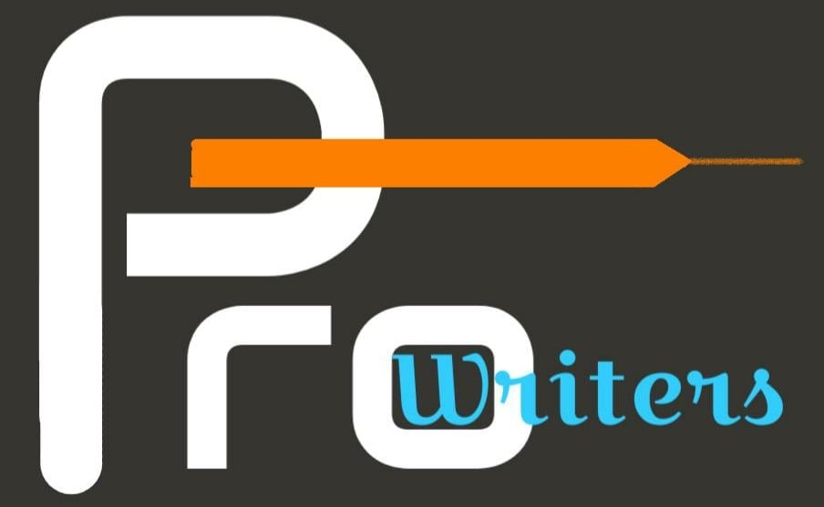

<div class="navbar">
  <div class="navbar__img-container">
    
  </div>
  <div class="navbar__icon-container">
    <ion-icon (click)="openModal()" class="navbar__icon" name="menu-outline"></ion-icon>
  </div>
</div>